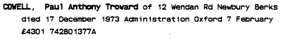
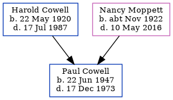

Paul Anthony Troward Cowell 1947 - 1973
[ Home ] | [ Calendar ] | [ Surnames Index ] | [ Errors ] | [ Family History ]The child of Harold Cowell and Nancy Moppett, Paul Cowell, the third cousin on the mother's side of Nigel Horne, was born in Portsmouth, Hampshire, England on 22 Jun 19471,2. In 1973, he was living at 12 Wendan Road, Newbury, Berkshire, England.
He died on 17 Dec 1973 in Newbury2.
Parents
- Harold Victor Neville was born on 22 May 1920
- Nancy L was born c. Nov 1922
Citations
- England & Wales births 1837-2006 - Findmypast
- England & Wales deaths 1837-2007 - Findmypast
Media
Paul A T Cowell - probate

England & Wales births 1837-2006 - BMD/B/1947/2/AZ/000349/032
England & Wales deaths 1837-2007 Transcription - BMD-D-1973-4-AZ-000262-069
Family Tree
Map
Generated by ged2site. Last updated on Jul 3, 2024
Known Issues
Parent Harold is listed in the residence for 1956, but this child is not
Residence record for 1973 contains no citation